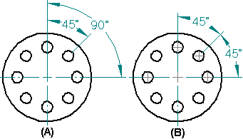
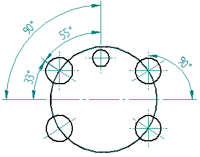

Angle Between command
Places a dimension that measures the angle between elements or key points. When you select the elements or key points, the dimension is placed in one of four quadrants. As you move the cursor, the dimension dynamically changes to another quadrant. You can place angular dimensions in stacked (A) or chained dimension (B) groups.

In the Draft environment, you can use the Angle Between command to place a dimension to a center mark line or to a center mark center point.

You can add angular dimensions to existing dimension groups.